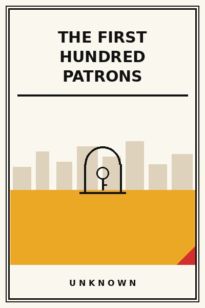

The First Hundred Patrons
The manual ground game of building foundational loyalty.
READ FULL BREAKDOWN (FREE) →The Big Idea
Do things that do not scale until your first hundred customers love you so intensely that they become your marketing department.
Key Lessons
The Manual Recruit
Never rely on social media ads to launch a business; go door to door and recruit customers by hand.
The Unreasonable Onboarding
Giving individual phone support to initial users uncovers bugs that analytics dashboards never show.
Obsessive Listening
The first hundred customers will tell you exactly what is wrong if you stop defending your ego.
The Hand-Crafted Touch
Including handwritten thank-you notes or personalized gifts shocks customers into becoming lifetime advocates.
Identifying the Fanatic
Within your first hundred buyers sits a small minority of super-users who will generate eighty percent of referrals.
Ignoring Vanity Metrics
Ten thousand page views that churn in thirty seconds are worthless compared to fifty readers who return daily.
Building the Referral Engine
Delighted initial customers will gladly recommend peers if you make the referral mechanism effortless.
Crossing into Scale
Only after the first hundred patrons demonstrate repeatable love should you invest in automation and paid growth.
The Graveyard Proves It
Where this advice breaks: Where this advice breaks: after achieving product-market fit, refusing to build automated systems traps founders in manual exhaustion.
Read the autopsy: clubhouse-fade →